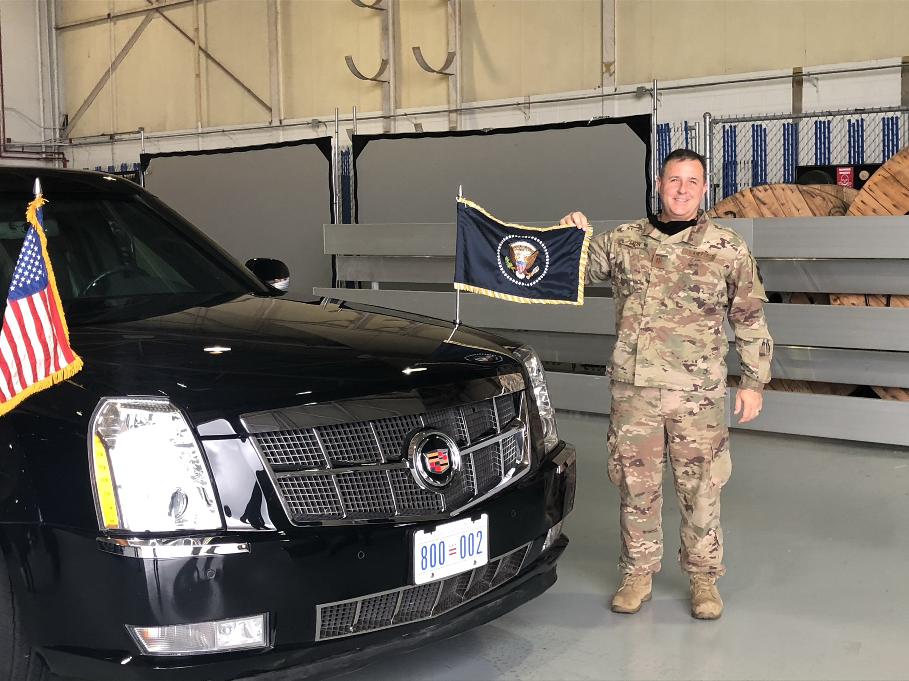

Innovative mindset that is always looking for better ways to solve a problem. The first step is to correctly identify "what problem are we trying to solve!" The good idea fairy is sometimes your friend - embrace change.
My Project
I'm always working on something. Most of the time, it's getting results for my team. But sometimes, it's a personal project that let's me explore new concepts, ideas and/or technology.
My Motivation
My work is my purpose, my driving force. It's the reason I get up every day and do what I do. Most importantly, it keeps pushing me to achieve bigger and better things with each new challenge
My Education
Formal education includes an Executive Masters in the Management of Technology from Georgia Institute of Technology. Undergraduate Computer Science from Park University.
My Goals
Be humble, be nice, be kind! Set the example and be a servant leader. Be a role model for my daughters.
More than just a resume!

Recommendations
I have known Kerry for over 5 years during which I had the opportunity to interface with him on several cross-functional activities and in grad school. Kerry is an individual with high integrity and he is well respected among the AT&T community. His achievements outside of the office also speak volume - his dedication to his family, service to his country as a military leader, and desire to continue his education.
Kerry is an individual with a number of skill sets in his bag, including strategic planning, quantitative analysis, officer-level presentation, IT management, vendor outsourcing and project management. Moreover, Kerry would make an immediate positive impact to almost any team
Steve Strickland
Kerry is a very intelligent, hard working professional. His strengths include his diligence in getting a job done. He has the ability to retain knowledge and use that knowledge to meet goals and strengthen networks of people. He is an outstanding professional.
Military Commander
Kerry is one of those exceptional leaders that can operate at a high level in both the strategic and tactical arenas. His passion, dedication and integrity are evident in everything he does.
Military Commander

Military Commander
Military Commander